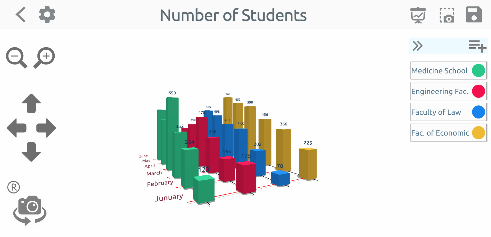

clkGraphs 3D - Guida alla creazione di grafici
In questa guida, cercheremo di spiegare come creare grafici con l'applicazione clkGraphs 3D e come utilizzare l'applicazione nel modo più efficiente.
Contenuto del manuale
Creazione del grafico
Grafico a torta
Schermata delle impostazioni
Gruppi di presentazione
Variabili
Creazione grafica
Fai clic sul pulsante Aggiungi a forma di più nella pagina principale e seleziona il tipo di grafica che desideri creare.


Grafico a torta
Supponiamo di aver scelto il grafico a torta dalla schermata che si apre e creerai un grafico a torta con i dati che hai.
La pagina si aprirà prima con la finestra Aggiungi elemento. Dopo aver inserito il valore e aver fatto clic sul pulsante "Salva", vedrai la prima versione del grafico a torta come mostrato di seguito.

Dato che un singolo elemento è stato aggiunto al tuo grafico a questo punto, è normale vedere un intero grafico a torta in un solo colore nell'area centrale.
Se fai clic sull'elemento "Nuovo articolo" mostrato con "1" nell'immagine sottostante, puoi vedere il colore, il nome e il valore dell'elemento corrente.
Puoi modificare le tue proprietà. Se vuoi aggiungere un nuovo elemento al tuo grafico, puoi utilizzare il pulsante aggiungi elemento indicato da "4".
Puoi dare un nuovo nome a questo disegno cliccando sulla parte indicata da "3" nella parte superiore dello schermo.
Puoi impostare la dimensione dell'etichetta sull'immagine e aggiungere l'immagine a un gruppo di diapositive utilizzando "Impostazioni"
pulsante con indicato da "2".

Finestra Impostazioni
La pagina sottostante si apre con il pulsante "Impostazioni" situato al punto due. La barra di scorrimento indicata dal numero "1" in questa pagina
Imposta la dimensione della targhetta accanto al grafico a torta. Al punto "2" puoi inserire un nome di gruppo per il tuo lavoro e
puoi includere la tua grafica in quel gruppo premendo il simbolo (+) a lato. Utilizzando l'elenco a discesa "3" invece di creare un nuovo gruppo
puoi scegliere uno dei gruppi disponibili.
Quindi cosa fanno questi gruppi? Ve lo raccontiamo ora.

Gruppi di presentazioni
Nell'immagine qui sotto, puoi vedere i pulsanti "1", "2", "3" in alto a destra. Dopo aver inserito tutti i tuoi valori puoi salvare il tuo grafico
con l'utilizzo del pulsante di salvataggio indicato da "3". Il pulsante numero "2" è il pulsante dello screenshot. Quando inserisci i tuoi valori e hai il tuo grafico pronto
puoi creare la tua presentazione da questa pagina o aggiungere questa immagine come pagina a un gruppo di diapositive che hai creato nella pagina "Impostazioni".
In questo modo, puoi creare presentazioni una dopo l'altra aggiungendo diversi tipi di grafica allo stesso gruppo di diapositive.
Il pulsante "1" apre il gruppo di diapositive a cui è allegata la grafica.

Un gruppo di presentazione è esattamente come appare di seguito. Sullo schermo viene visualizzato il gruppo di diapositive denominato "Le mie presentazioni".
Le schermate di grafica diversa sono disposte orizzontalmente all'infinito. Puoi vedere altre immagini scorrendo l'elenco in orizzontale,
puoi visualizzarli come una pagina intera facendo clic su di essi. In questo modo è possibile creare diversi tipi di grafica per un progetto, uno dopo l'altro e
puoi fare una presentazione Puoi riordinare le immagini con il pulsante "Modifica" in alto a destra.

Puoi eliminare l'immagine selezionata dal gruppo di diapositive corrente con l'aiuto del pulsante "Elimina" come mostrato in alto a destra in basso nelle immagini a schermo intero.

Variabili
In un grafico a torta, gli elementi hanno una sola variabile e quella variabile è il valore dell'elemento. Ma per altri tipi di grafici (barra, colonna, bolla)
gli elementi possono avere più variabili. Per aumentare il numero di variabili nel grafico, fai clic sul pulsante (+) mostrato nell'immagine qui sotto.

Vedrai questa schermata in cui le variabili vengono aggiunte, modificate o eliminate. Qui puoi dare nuovi nomi alle variabili esistenti. È possibile eliminare le variabili o crearne una nuova.
Quando apporti una modifica a una variabile o ne aggiungi una nuova, questa modifica si rifletterà immediatamente sugli altri elementi del grafico.
Dopo aver inserito il valore della variabile appena aggiunta per tutti gli elementi, puoi salvare il tuo grafico.

Come puoi vedere le variabili degli elementi sono visualizzate sul grafico. È possibile modificare se visualizzare le linee degli assi e le informazioni nella schermata delle impostazioni.
Inoltre, puoi visualizzare la grafica da diverse angolazioni con i pulsanti della fotocamera sul lato sinistro dello schermo e puoi acquisire più schermate
da diverse angolazioni in una grafica affollata.

Nei grafici a barre, a colonne e a bolle, puoi fare clic sui modelli di diagramma per nascondere o rendere visibile l'etichetta informativa sopra il modello.